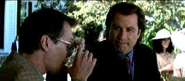

| Domestic Disturbance (SE) /C, B+ |
| Paramount/2001/89/ANA 2.35 |
When Domestic Disturbance stays within the
bounds of conventional domestic drama, it's actually pretty good. A family
in flux, a child torn between his father and a new man in his mother's
life, a small town with ample charm; no, it doesn't break any new ground,
but it's reliable. But finally, like a psychopath unable to control
events, Domestic Disturbance goes of the deep end without
restraint.
 |
|
Wedding chit chat.
©Paramount
|
Domestic Disturbance is a well-made, edited and
photographed film, but a pretty, skillful production is not enough. The
script cannot live up to the pedigree of the production standards. Harold
Becker's direction is competent, but he's limited by the contrivances of
the script.
The cast puts out good work. John Travolta as divorced
Dad Frank Morrison stays mostly charming and likable, though his behavior
is not consistent throughout the film. Vince Vaughan gives the new Dad
Rick Barnes a signature hint of something amiss. Teri Polo is sunny as
Susan Morrison/Barnes. Steve Buscemi's Ray is one cool character and the
impetus for things to change. Unfortunately, the post Ray scenario takes a
deep plunge into improbability.
The script plays fast and loose with reasonable
behavior. Are we really to believe the way Jason, the confused son, acts?
How come protective parents don't put up a better fight when push comes to
shove? Yes, the script tries hard to establish reason to doubt young
Jason, but it isn't enough. I have a difficult time believing the way the
characters behave; Frank's girlfriend, Frank's former wife, Frank himself,
they don't ring true. Rick may be a psychopath, but he seems to be the
most grounded person in the film. You have to hand it to Rick: this is one
guy who can really keep his fighting cool even with a burnt up arm and a
cracked skull.
Domestic Disturbance is turned out in
first-rate DVD attire. Details and depth of image are delivered with
glossy impact. The very stable stable transfer exhibits only minor
edginess in some high peak transitional scenes. Light output is excellent
in various situations. Black levels are excellent and shadow detail is in
good balance. The color saturation is vital with a nice range for skin
tones. The intense color is very pleasing.
The special edition features a scene specific
commentary from Harold Becker, always a generous observer if not
scintillating. There are also deleted scenes, storyboards, and a
theatrical trailer. |
|
|
|

Selections from the Feature
Archive include articles on Akira Kurosawa, Frank Darabont, Blonde Bimbos, Hollywood Street Gangs, or Vietnam: The Hollywood Pariah, and many
more....
Anthony Quinn 
A larger than life screen presence brought joy to audiences for six
decades. Anthony Quinn had a rare zest for life that was
invested in many of his roles. Long live his memory. Click on the image
for a look at his career.

Mother Night/A-/A-
The eccentric style of Nick Nolte is perfect for the angst ridden Howard
W. Campbell, Jr., a hero or a villain.


The National Film Preservation Foundation (NFPF) is the
nonprofit organization created by the U.S. Congress to save America's film
heritage.

An elegantly presented fan site dedicated to one of Hollywood's great
action stars.

Films of the Golden Age is
a showcase for special feature articles on film people
and Hollywood history, all illustrated with beautiful photographs and
classic movie art.
|